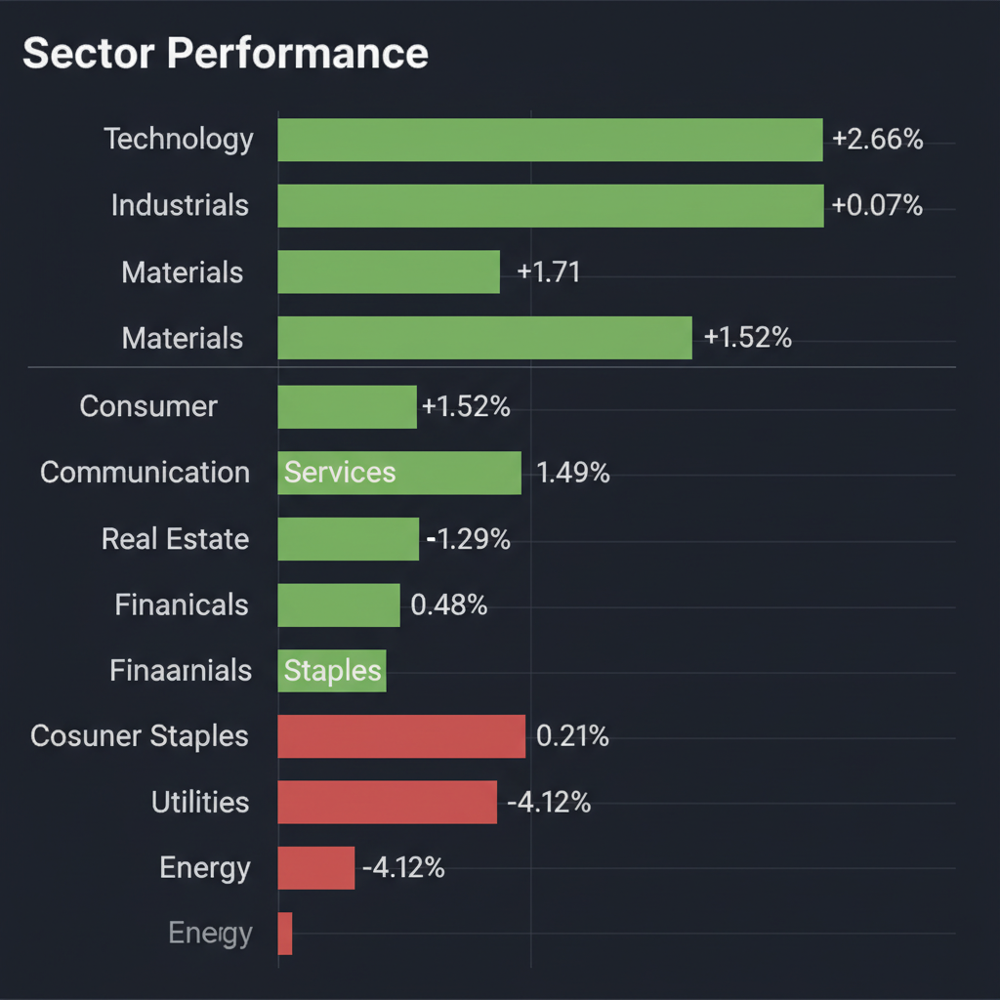
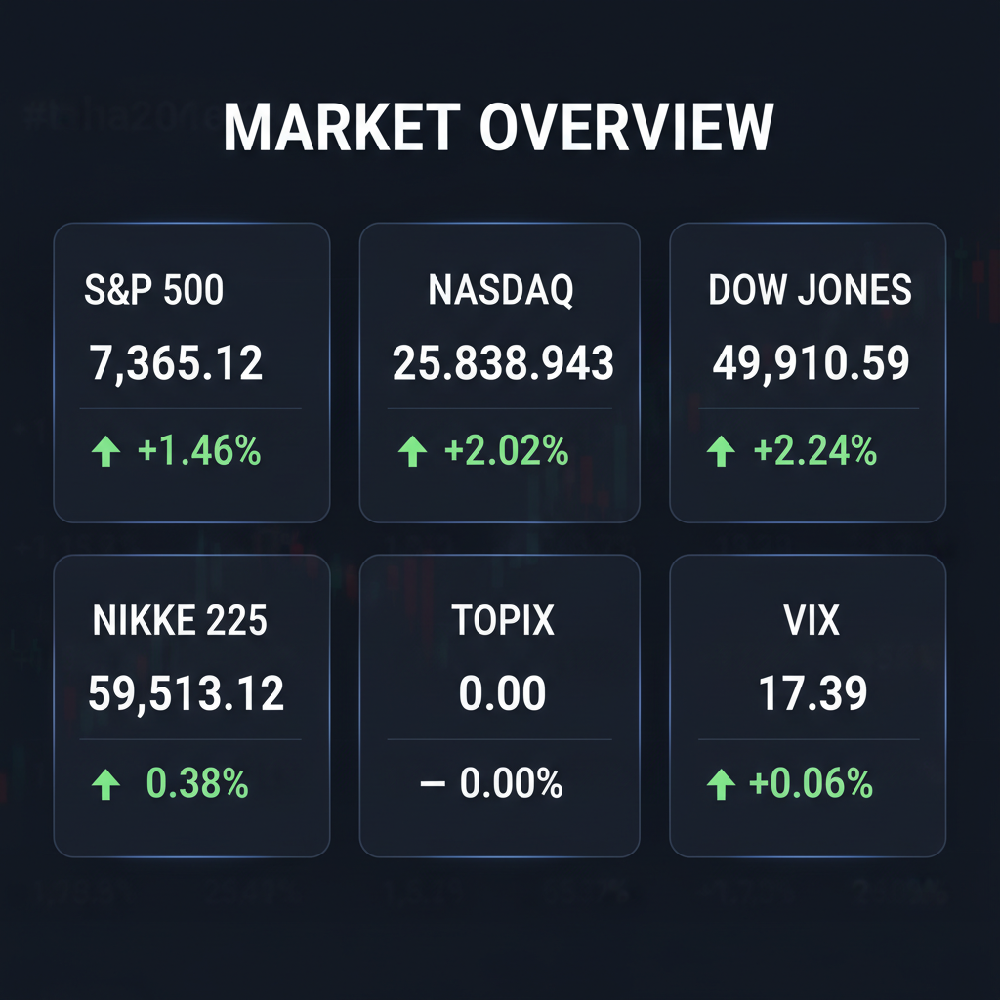

Daily Investment Report - 2026-05-07
Generated: 2026/5/7 7:25:31


本日の投資チームミーティングにおける各エージェントの分析を統合し、投資家向けの最終レポートを作成いたしました。現在の市場は「期待と脆弱性」が混在する極めて難易度の高い局面です。本レポートに基づき、リスクを管理しながら隠れた成長機会を捉えてください。
1. エグゼクティブサマリー
- S&P500やNASDAQがAI主導で最高値を更新する一方、VIX指数が逆行して上昇しており、オプション市場は水面下でテールリスクに警戒しています。
- 中東和平への期待で原油安・インフレ後退が進んでいますが、この楽観論が崩れた際の反動リスク（インフレ再燃）は甚大です。
- 投資戦略としては、大型株の過熱感を避け、確実なキャッシュフローを生む「隠れた中小型株」の選別買いと、エネルギー等を用いたヘッジの構築が必須です。
2. 注目銘柄リスト
強気（買い推奨）
- Wix.com（WIX） [時価総額: 約100億ドル]: 成長重視から収益性重視へのシフトでフリーキャッシュフロー（FCF）が劇的に改善しており、AI活用による単価向上と割安なバリュエーションが魅力です（決算通過後の順張りを推奨）。
- モノタロウ（3064） [時価総額: 約8,000億円]: B2B向けECで圧倒的な競争優位性を持ち、高い投下資本利益率（ROIC）を誇るため、インフレやサプライチェーン混乱下でも企業の効率化需要を確実に取り込めます。
- エクセディ（7228） [時価総額: 約1,200億円]: 米国でのEV失速とハイブリッド車（HV）回帰の恩恵を直接受ける部品メーカーであり、潤沢な手元資金とPBR1倍割れからの株主還元策が期待できます。
- AppLovin（APP） [時価総額: 約270億ドル]: 単なるAIインフラではなく、AIアルゴリズムを広告マッチング等の「実ビジネス」に落とし込み、強烈なキャッシュフローを創出している隠れたAIマネタイズ銘柄です。
中立（様子見）
- アルベマール（ALB） [時価総額: 約140億ドル]: 業績ガイダンスの上方修正により最悪期を脱したサインが見られますが、資源価格に依存するビジネスモデルのため、バランスシートの健全性回復を次四半期まで確認すべきです。
- アクソン・エンタープライズ（AXON） [時価総額: 約220億ドル]: 防衛・セキュリティ需要で決算自体は好調ですが、関税懸念やバリュエーションの高さを理由に利益確定の売りに押されており、短期的なボラティリティに注意が必要です。
弱気（警戒）
- ワーナー・ブラザース・ディスカバリー（WBD） [時価総額: 約200億ドル]: 29億ドルの巨額再編コストと過剰債務がFCFを大きく圧迫しており、低PBRでも手を出してはいけない典型的なバリュートラップです。
- Snap（SNAP） [時価総額: 約260億ドル]: AIスタートアップ（Perplexity）との提携終了や中東地政学リスクを理由に慎重なガイダンスを出しており、独自のプラットフォーム競争力に重大な懸念があります。
3. セクター推奨ランキング
出遅れ感がありバリュエーションが比較的割安な上、AIデータセンターの排熱・電力網整備といった「物理的インフラ投資」や、防衛需要の実需を確実に取り込めるため。
大型AIインフラ銘柄は高値掴みのリスクがありますが、AIを実ビジネスに応用して黒字化している中小型ソフトウェア企業や、データセンターの黒子役（冷却技術等）には莫大な成長余地があります。
過度なEVシフトの揺り戻しにより、既存設備の減価償却を終えたハイブリッド車（HV）事業が強烈なキャッシュを創出しており、バリュー株として極めて強固です。
足元では中東和平期待で過剰に売り叩かれていますが、万が一外交交渉が決裂した際のインフレショックに備える「最強のポートフォリオ・ヘッジ」として一部組み込む価値があります。
4. 今週の注目イベント
- 5月7日：日本市場・主要企業51社の決算発表（味の素、住友林業、モノタロウなど）
- 5月13日：米国市場・中小型株の注目決算（Wix.com、StubHubなど、大きな価格変動が予測される銘柄群）
- 随時：米国とイランの外交交渉（ウラン合意等）の進展、およびホルムズ海峡における海運リスクのヘッドライン
5. リスク要因
- VIXのダイバージェンス：株価が最高値を更新しているにもかかわらずVIXが上昇（17.39）しており、オプション市場はすでに急落のブラックスワンを警戒している点。
- 地政学リスクの逆回転：織り込み済みの「中東和平」が破綻し、海峡封鎖などによって原油価格が急騰した場合、インフレ再燃と金利上昇でハイテク株が暴落するリスク。
- AI投資のバリュエーション収縮：過度な資金集中（Crowded Trade）が起きており、少しでも業績ガイダンスが市場の期待を下回れば、容赦ないマルチプル・コンプレッション（株価倍率の低下）が起きるリスク。
- 為替変動リスク：米国のインフレ沈静化によるFRB利下げ期待が強まった場合、急激な円高ドル安が進行し、日本株全体（特に輸出関連）の重石となるリスク。
6. アクションアイテム
- ポジションサイズの調整：過熱感のあるハイテク大型株の利益を一部確定し、ポートフォリオ全体のキャッシュ比率を引き上げてください。
- 決算後の順張り徹底：WIXなどボラティリティが予想される中小型株については「決算跨ぎ」を避け、好決算とチャートのブレイクアウトを確認した後に順張りでエントリーしてください。
- テールリスクヘッジの構築：総悲観で売られているエネルギーセクター（XLE）の少額ロング、またはVIXコールオプションを購入し、中東情勢悪化に伴う暴落に備えた保険をかけてください。
- 日本のHV関連バリュー株の仕込み：米国のEV事業赤字（フォード等）を逆手に取り、割安放置されている日本のハイブリッド関連の中小型自動車部品メーカーをポートフォリオに組み込んでください。